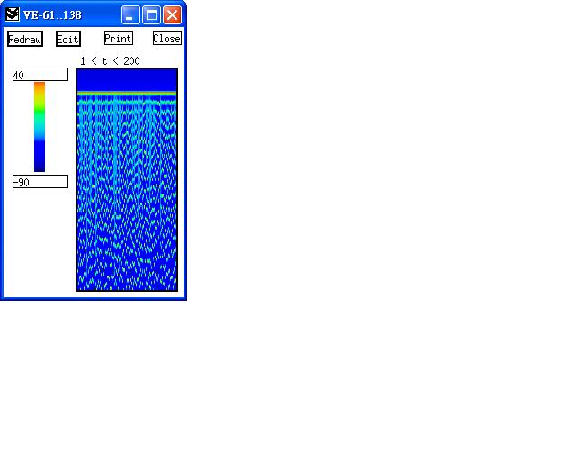
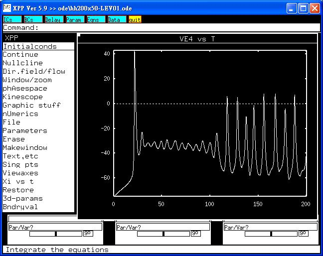

This is the readme.txt for the models associated with the paper. Huang CW, Tsai JJ, Huang CC, Wu SN. Experimental and simulation studies on the mechanisms of levetiracetam-mediated inhibition of delayed-rectifier potassium current (KV3.1): contribution to the firing of action potentials.J Physiol Pharmacol (2009) in press. Levetiracetam (LEV) is an S-enantiomer pyrrolidone derivative with established antiepileptic efficacy in generalized epilepsy and partial epilepsy. However, its effects on ion currents and membrane potential remain largely unclear. In this study, we investigated the effect of LEV on differentiated NG108-15 neurons. In these cells treated with dibutyryl cyclic AMP, the expression level of the KV3.1 mRNA was elevated. With the aid of patch clamp technology, we found that LEV was able to suppress the amplitude of delayed rectifier K+ current (IK(DR)) in a concentration-dependent manner with an IC50 value of 37 uM in differentiated NG108-15 neurons. LEV (30 uM) shifted the steady-state activation of IK(DR) to a more positive potential by 10 mV, without shifting the steady-state inactivation of IK(DR). Neither Na+, nor erg (ether-a-go-go -related)-mediated K+ and ATP-sensitive K+ currents were affected by LEV (100 uM). LEV increased the duration of action potentials in current clamp configuration. Simulation studies In a modified Hodgkin-Huxley neuron and network unraveled that the reduction of slowly inactivating IK(DR) resulted in membrane depolarization accompanied by termination of the firing of action potentials in a stochastic manner. Therefore, the inhibitory effects on slowly inactivating IK(DR) (Kv3.1-encoded current) may constitute one of the underlying mechanisms through which LEV affects neuronal activity in vivo. To run the models: XPP: start with the command xppaut hh200x50-LEV01.ode (or similar) This simulation will make graphs similar to figure 10A in the paper of Huang et al. From Viewaxes, select Array, then assign to: column 1: VE0, Ncols: 200, Row 1: 10, NRows: 200, Rowskip:10, Zmin: -90, Zmax: 40 Back at the main menu select "Xi vs t", then change VE0 to VE4, finally select Initalconds -> Go to generate the following graphs:   When gk3 was changed to 4 and eta to 10, graphs will be similar to Figure10B. Bard Ermentrout's website http://www.pitt.edu/~phase/ describes how to get and use xpp. These model files were submitted by: Drs. Sheng-Nan Wu and Chin-Wei Huang National Cheng Kung University Medical College Tainan 70101, Taiwan snwu@mail.ncku.edu.tw